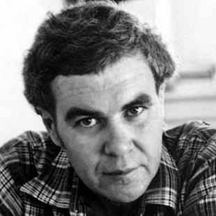

I attended Portland State University from 1998 to 2005. When I left, I had a bachelor's degree in Contemporary Literature and a master's degree in Education. I studied at Beijing University in August of 2005 where I became certified to teach Teach Oral English as a Foregin Language (TOEFL) in China.
I began my career in education as a middle school language arts teacher, but quickly shifted into teaching spoken English and grammer. Blending reading and writing with English language instruction provided me with many opportunities, taking me across Asia and America before returning home to Portland.
Below are links to my repositories on GitHub. You can see the code I've written so far and get an idea of what I've been learning. Feel free to comment and give feedback on my work to help me improve.